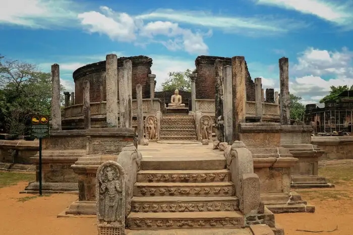

Sri Lanka’s second most ancient kingdom, Polonnaruwa, became the capital of Sri Lanka following the destruction of Anuradhapura in 993 AD. Built by King Parakramabahu I, this urban green city has seen numerous civilisations journeying through this kingdom including the Cholas, South Indian Hindu and Buddhist Sinhalese, between the 12th and 13th centuries. Brimming with archeologically treasures, the city is dotted with temples, shrines, palaces and ruins. Explore the royal palace from the period of King Parakramabahu I (1153 – 1186). Once a massive structure with 50 rooms, today impressive walls still stand strong. Lion sculptures guard the stairs to the king’s audience hall, where intricately carved stone elephants line the walls and the king’s swimming pool with large crocodile mouth statues spout fresh water. Built of stone, Shiva Devale No.2, the oldest Hindu temple in Polonnaruwa is tucked away in a small forest clearing. An impressive collection of ruins forms the sacred quadrangle and in the middle is the vatadage (ancient structure) with four entrances leading to the place where the Sacred Tooth Relic was once housed. Explore the large stupa (hemispherical structure containing relics) Rankot Vihara and the monks’ quarters. A tribute built to the king’s queen, Dagaba Kiri Vihara is a perfectly preserved dagaba, lovingly repainted by devotees prior to the Vesak Poya every year (Vesak Poya is celebrated in May at full moon and is a festival honouring Buddha’s birth, enlightenment and nirvana). Marvel at the massive 17m (55ft) Buddha statue at Lankatilaka and end your explorations in front of four Buddha figures at Gal Vihara, cut from one slab of granite.
History
Polonnaruwa was initially a temporary royal residence. However in the late 10th century, it became a capital city of Ceylon (the former name of Sri Lanka) after the ancient capital of Anuradhapura was conquered and destroyed by King Chola Rajaraja I. The Chola dynasty favoured Polonnaruwa over Anuradhapura as it was thought to be easier to defend.
Despite this reasoning, in 1070, King Vijayabahu I of the Sinhalese kingdom conquered Polonnaruwa and made it his capital, exiling the Cholas. Vijayabahu set about adorning Polonnaruwa with Buddhist monuments, as opposed to the Brahmanist monuments of the Chola dynasty.
Overall, Polonnaruwa would remain the capital for three centuries, with the 12th century seeing a mass building project undertaken under King Parakramabahu I.
Parakramabahu constructed beautiful palaces, monuments, parks and gardens. The well-preserved ruins of many of the structures built during this time can be seen at Polonnaruwa today, such as its star attraction, the collection of vast Buddha sculptures known as the Gal Vihara.
Another monument created under Parakramabahu is the Lankatilaka, a grand sacred structure known as a “gedige” which houses a large headless Buddha statue.

Present Day
Today the ancient city of Polonnaruwa remains one of the best planned archaeological relic cities in the country, standing testimony to the discipline and greatness of the Kingdom's first rulers. Its beauty was also used as a backdrop to filmed scenes for the Duran Duran music video Save a Prayer in 1982. The ancient city of Polonnaruwa has been declared a World Heritage Site by UNESCO.
Near the ancient city, there is a small town with several hotels and some glossy shops, and places to fulfill day-to-day needs. There are government institutions in a newly built area called “New Town,” about 6 km away from the town and the main road. The largest school in the district, Polonnaruwa Royal Central College is situated at new town.
Polonnaruwa is the second largest city in North Central Province, but it is known as one of the cleanest and more beautiful cities in the country. The green environment, amazing ancient constructions, Parakrama Samudra (a huge lake built in 1200), and attractive tourist hotels and hospitable people, make it a tourism hotspot.
Another draw for tourists is the city's population of toque macaques. The monkeys have been living in the ruins since human occupation and continued to thrive there long after the humans left.